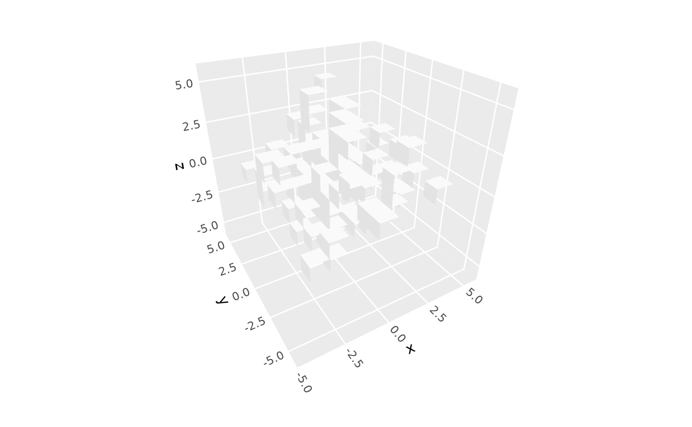

Creates 3D voxel visualizations from sparse 3D point data. Each data point becomes a fixed-size cube centered on its coordinates. Useful for volumetric data and 3D pixel art.
Usage
geom_voxel_3d(
mapping = NULL,
data = NULL,
stat = StatVoxel3D,
position = "identity",
...,
width = 1,
faces = "all",
light = NULL,
cull_backfaces = TRUE,
sort_method = NULL,
scale_depth = TRUE,
force_convex = FALSE,
na.rm = FALSE,
show.legend = NA,
inherit.aes = TRUE
)
stat_voxel_3d(
mapping = NULL,
data = NULL,
geom = GeomPolygon3D,
position = "identity",
...,
width = 1,
faces = "all",
light = NULL,
cull_backfaces = TRUE,
sort_method = NULL,
scale_depth = TRUE,
force_convex = FALSE,
na.rm = FALSE,
show.legend = NA,
inherit.aes = TRUE
)Arguments
- mapping
Set of aesthetic mappings created by
aes().- data
The data to be displayed in this layer.
- stat
The statistical transformation to use on the data. Defaults to
StatVoxel3D.- position
Position adjustment, defaults to "identity". To collapse the result onto one 2D surface, use
position_on_face().- ...
Other arguments passed on to the the layer function (typically GeomPolygon3D), such as aesthetics like
colour,fill,linewidth, etc.- width
Numeric value controlling box width as a fraction of grid spacing. Default is 1.0 (volumes touch each other). Use 0.8 for small gaps, 1.2 for overlap. Grid spacing is determined automatically using
resolution().- faces
Character vector specifying which faces to render. Options:
"all"(default): Render all 6 faces"none": Render no facesVector of face names:
c("zmax", "xmin", "ymax"), etc.
Valid face names: "xmin", "xmax", "ymin", "ymax", "zmin", "zmax". Note that this setting acts jointly with backface culling, which removes faces whose interior faces the viewer – e.g., when
cull_backfaces = TRUEandfaces = "all"(the default), only front faces are rendered.- light
A lighting specification object created by
light()(see that function for details), orNULLto disable shading. Specify plot-level lighting incoord_3d()and layer-specific lighting ingeom_*3d()functions.- cull_backfaces, sort_method, force_convex, scale_depth
Advanced polygon rendering parameters. See polygon_rendering for details.
- na.rm
If
FALSE, missing values are removed.- show.legend
Logical indicating whether this layer should be included in legends.
- inherit.aes
If
FALSE, overrides the default aesthetics.- geom
The geometric object used to display the data. Defaults to
GeomPolygon3D.
Details
Note that voxel geometries sometimes require pairwise depth sorting for correct rendering.
This is the default for smaller data sets, but not for larger data sets due to compute speed;
in those cases you may wish to manually specify sort_method = "pairwise".
Aesthetics
Voxel 3D requires the following aesthetics:
x: X coordinate (voxel center position)
y: Y coordinate (voxel center position)
z: Z coordinate (voxel center position)
Computed variables
normal_x,normal_y,normal_z: Face normal componentsvoxel_id: Sequential voxel numberface_type: Face name ("zmax", "xmin", etc.)
See also
stat_col_3d() for variable-height columns, stat_surface_3d() for smooth surfaces,
coord_3d() for 3D coordinate systems, light() for lighting specifications,
GeomPolygon3D for the default geometry.
Examples
# Sparse 3D voxel data
voxel_data <- data.frame(
x = round(rnorm(100, 0, 2)),
y = round(rnorm(100, 0, 2)),
z = round(rnorm(100, 0, 2))
)
p <- ggplot(voxel_data, aes(x, y, z)) + coord_3d()
# Basic 3D voxel plot
p + geom_voxel_3d(fill = "steelblue")
# With aesthetic fill
p + stat_voxel_3d(aes(fill = z)) +
geom_fill_viridis_c() + guides(fill = guide_colorbar_3d())
#> Error in geom_fill_viridis_c(): could not find function "geom_fill_viridis_c"
# Show only visible faces for performance
p + geom_voxel_3d(faces = c("zmax", "ymin", "xmin"))
